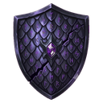
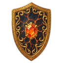

Priest
Role: Healer: lifesteal and staying power, long fights
Weapons: Mace + Shield
Gear for this class
Weapons:  Copper Mace T1
Copper Mace T1  Iron Mace T2
Iron Mace T2  Steel Mace T3
Steel Mace T3  Silver Mace T4
Silver Mace T4  Gold Mace T5
Gold Mace T5  Platinum Mace T6
Platinum Mace T6  Celestite Mace T7
Celestite Mace T7  Adamantite Mace T8
Adamantite Mace T8  Obsidian Mace T9
Obsidian Mace T9  Flamerite Mace T10
Flamerite Mace T10
Off-hand: Copper Shield T1   Iron Shield T2
Iron Shield T2  Gold Shield T5 Platinum Shield T6
Gold Shield T5 Platinum Shield T6  Celestite Shield T7
Celestite Shield T7
Armor and accessories: Every class can wear every armor piece and accessory. Items →
Skill tree
Each row opens at the level shown. Every skill goes up to rank 5; an evolved active skill opens only when the one before it is at 5/5. You cannot open every skill: choose.
| Unlocks at level | Skill tree |
|---|---|
| Lv 1 | MARTYR'S SPIRIT Passive Below 40% health, the healing you give is increased. |
| Lv 1 | ATTACK Active Normal Your basic attack. Every player starts with it, and it builds energy for your skills. |
| Lv 5 | Divine Punishment Active Normal A holy strike against one target. |
| Lv 5 | HOLY SHIELD Passive The first time you are hit, part of the damage is cancelled. |
| Lv 10 | HOLY CURSE Passive The target you hit loses critical chance. |
| Lv 10 | Blessing Active Normal Heals instead of striking. Repeated heals in one fight get weaker. Afterwards it keeps healing you a little each turn for a few turns. |
| Lv 15 | Weaken Active Normal Lowers the target's attack for a few turns. |
| Lv 15 | CLEANSING Passive Poison and bleed on you have a chance to wear off each round. |
| Lv 25 | Divine Punishment Active Rare A holy strike against one target. Evolution effect: SMITE MASTER — Your hits deal more damage the more health the target is missing. |
| Lv 25 | SECOND WIND Passive You regenerate some health every round. |
| Lv 35 | ENDURANCE Passive Your maximum health is increased. |
| Lv 35 | Blessing Active Rare Heals instead of striking. Repeated heals in one fight get weaker. Afterwards it keeps healing you a little each turn for a few turns. Evolution effect: HEALING FOCUS — Blessing heals for more. |
| Lv 45 | Weaken Active Rare Lowers the target's attack for a few turns. Evolution effect: LINGERING CURSE — Casting Blessing also lowers the enemy's attack. |
| Lv 45 | HOLY ARMOR Passive Your defense is increased. |
| Lv 60 | Divine Punishment Active Epic A holy strike against one target. Evolution effect: PUNISH THE WEAK — Divine Punishment deals extra damage to a target whose attack is lowered. |
| Lv 60 | DIVINE FOCUS Passive You gain extra energy every round. |
| Lv 75 | BURDEN OF SIN Passive The target you hit loses health each round for a while. |
| Lv 75 | Holy Nova Active Epic Hits every enemy and heals you at the same time. |
| Lv 90 | Weaken Active Epic Lowers the target's attack for a few turns. Evolution effect: SHATTERED GUARD — Weaken also lowers the target's defence. |
| Lv 90 | DECAYER Passive The target you hit heals for less. |